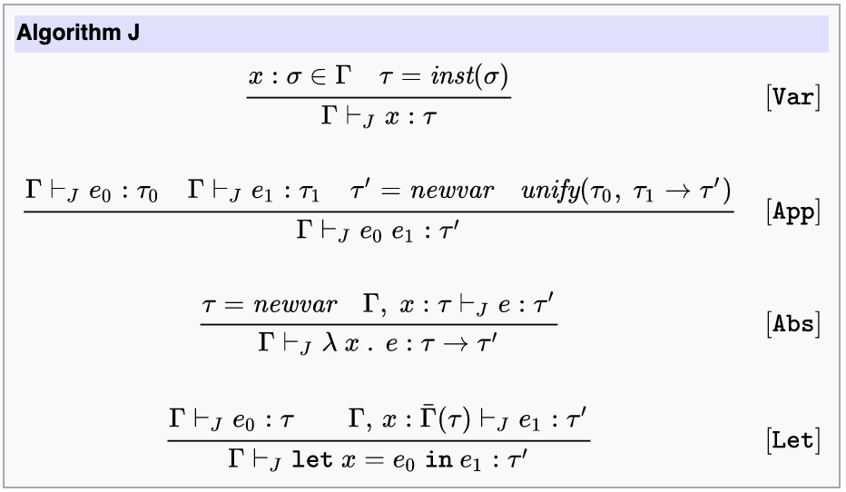

8 months ago...
- Starting a new job
- Main project is 10 years old
- Migration to TS started...
- ...and never finished
Who am I?
- Benoît Lemoine
- https://lemoine-benoit.medium.com/
- @benoit_lemoine
- I have around 500 files to migrate in TS...
- ...and 3500 strict errors to fix

From JavaScript
to
strict TypeScript
Migration in 2 steps
- JavaScript to lenient TypeScript
- lenient TypeScript to strict TypeScript
Lenient? Strict?
-
Massive usage of
anyand@ts-expect-error -
Non strict configuration (
noImplicitAny,strictNullChecks, etc.)
Any?
function getAge(a) { // a is implicitly any
return Math.floor(
(Date.now() - new Date(a.birthDate).getTime()
) / (86400 * 1000))
}
getName({birthdate: '2021-12-17'}) // returns NaN
ts-expect-error?
function getAge(a: Date) {
// The right-hand side of an arithmetic operation
// must be of type 'any', 'number', 'bigint' or an enum type.
return Math.floor(
(Date.now() - new Date(a.birthDate)
) / (86400 * 1000))
}
function getAge(a: Date) {
return Math.floor(
// @ts-expect-error
(Date.now() - new Date(a.birthDate)
) / (86400 * 1000))
}
JS to lenient TS
- Progressive approach
- Big bang mode
Progressive approach
-
npm install --save-dev typescript - Add a
tsconfig.jsonfile -
Add the option
"allowJS": true - Migrate files one by one
- Each file can be done with any level of strictness we want
Tips & Tricks
-
Favor
unknownoverany -
Favor
@ts-expect-errorover@ts-ignore -
Minimize casts (eg.
as unknown as User) - Good time to update the code to modern idioms
TS is not JS
function User(birthdate) {
this.birthdate = birthdate;
}
User.prototype.getAge = function() {
var yearDuration = 24 * 60 * 60 * 1000 * 365
return Math.floor(
(Date.now() - this.birthdate.getTime()) / yearDuration
);
}
module.exports = User
TS is not JS
export class User {
constructor(public birthdate: Date){}
getAge(): number {
const yearDuration = 24 * 60 * 60 * 1000 * 365
return Math.floor(
(Date.now() - this.birthdate.getTime()) / yearDuration
);
}
}
TS is not JS
function addFoo(arr = []) {
arr.push('foo');
return arr;
}
TS is not JS
function addFoo(arr = []) {
// Argument of type 'string' is not assignable
// to parameter of type 'never'.
arr.push('foo');
return arr;
}
TS is not JS
function addFoo(arr: string[] = []) {
arr.push('foo');
return arr;
}
TS is not JS
const obj = {};
obj.age = 12;
TS is not JS
const obj = {};
// Property 'age' does not exist on type '{}'
obj.age = 12;
TS is not JS
const obj: {age?: number} = {};
obj.age = 12;
Or even better...
const obj = {age:12};
Big bang solution
- Same than above, but all at once
-
TSFixMealias ofany -
More
anyand@ts-expect-error
Ts-Migrate
Step 1
Add a file ts-fixme.d.ts in your source directory
type $TSFixMe = any;
type $TSFixMeFunction = (...args: any[]) => any;
step 2
npm i -D typescript ts-migrate && \
ts-migrate init . && \
ts-migrate rename . && \
ts-migrate --aliases=tsfixme migrate .Ts-migrate example
class Item {
constructor(name, sellIn, quality) {
this.name = name
this.sellIn = sellIn
this.quality = quality
}
}
Ts-migrate example
// @ts-expect-error TS(2451): Cannot redeclare block-scoped variable 'Item'.
class Item {
name: $TSFixMe;
quality: $TSFixMe;
sellIn: $TSFixMe;
constructor(name: $TSFixMe, sellIn: $TSFixMe, quality: $TSFixMe) {
this.name = name
this.sellIn = sellIn
this.quality = quality
}
}
lenient TS to strict TS
- Remove
any -
More strict configuration (
strictNullChecks,noImplicitAny, etc.)
Guess the type
function doSomething(n) { // n is implicitly any
return Number.parseInt(n);
}
doSomething('123');
What's the type of n?
-
nis used inNumber.parseInt:nis a sub-type ofstring -
doSomethingis called with'123':nis a super-type of'123' - ...
- type of
nis'123'
Guess the type
let c; // c is implicitly any
beforeEach(() => {
c = { name: 'Georges' }
c.name = 'Peter';
});
What's the type of c?
-
cis set with{name: 'Georges'}:cis a super-type of{name: 'Georges'} -
c.nameis set with'Peter':cis a sub-type of{name: unknown}AND a super-type of{name: 'Peter'} -
type of
cis{name: 'Georges' | 'Peter'}
How do you know which type to use instead of any?
Use an unification approach
ts-remove-any
https://github.com/blemoine/ts-remove-anynpx ts-remove-anyRemove the explicit any
npx ts-remove-any -ets-remove-any
- Won't remove all
anys - Some compilations errors may slip
- Help the migration, won't do it in your stead
ts-remove-any
Contributions are welcomed
- Code
- missing use cases
Ad-Hoc type
function doSomething(
input
) {
const output = input.getById(1 + input.ts);
return output;
}
Ad-Hoc type
function doSomething<T>(
input: {getById: (id: number) => T, ts: number}
):T {
const output = input.getById(1 + input.ts);
return output;
}
Can't ChatGPT do this?
-
ChatGPT is able to remove the
anywith a well crafted prompt -
it's even better than
ts-remove-anyon some corner case - but it's not able to load a context of 1000s of files
- And your company may not be happy for you to send all your code to ChatGPT
Ensuring nobody's else is re-adding errors when a file is fixed?
Double tsconfig solution
-
Create a 2nd conf file (eg.
tsconfig.strict.json) -
Extends the original file
"extends": "./tsconfig" -
Add
"noEmit":trueand"include": [] -
Add
"strict":true(or any other options) -
Add file you upgrade to
includeswhen you upgrade them -
Add
tsc -p tsconfig.strict.jsonin the CI
Finishing the migration?
- It takes time (weeks, months...)
-
Keep a steady effort (do
nfiles per day, every day!) - it's worth the price
Conclusion
- Not that difficult...
- ...but takes a continuous effort